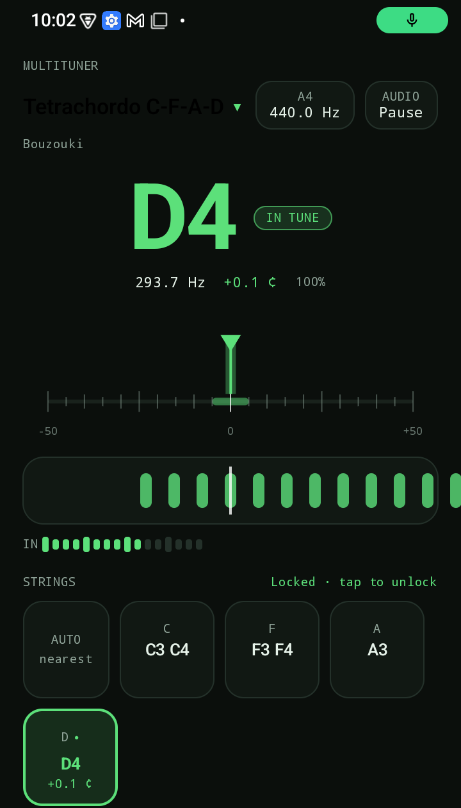

Android · Offline · No ads
MultiTuner
A precise tuner for guitar, Greek bouzouki, saz and tambouras. Native YIN pitch detection, per-string feedback, needle and strobe.
Guitar · Bouzouki · Saz · Tambouras

String-aware
Detects the nearest string or course and highlights its live cents offset.
Visual tuning
Large note readout, needle, animated strobe and input level.
Private by design
Audio is processed on-device. No internet permission, no accounts, no tracking.